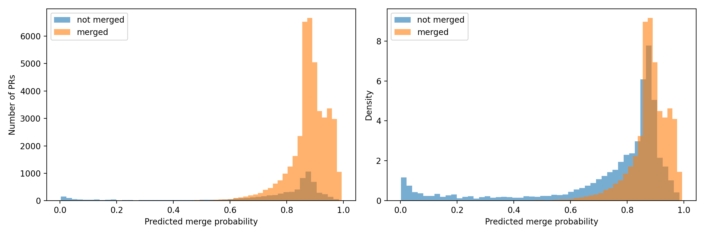

A leakage-aware ranking model trained on PR-opening signals and pre-opening activity. Designed as a triage tool, not an automated decision system.
Python · Polars · pyarrow · scikit-learn · matplotlib.
Hourly GH Archive files, continuous July 2015.
≈ $688.40 · 130 hrs of analyst time.
The model is a prioritization layer on top of GitHub's firehose. It does not reproduce maintainer reasoning; it surfaces probable outcomes from public signals.
For a team reviewing 500 PRs/month, even a 10% triage saving recovers ≈ $1,512 / yr at $30/hr.
| Event type | Count | Share |
|---|---|---|
| PushEvent | 4,417,737 | 47.7% |
| CreateEvent | 1,329,287 | 14.3% |
| IssueCommentEvent | 886,068 | 9.6% |
| WatchEvent | 826,509 | 8.9% |
| PullRequestEvent | 470,260 | 5.1% |
| Other event types | 1,339,672 | 14.4% |
Action distribution within PullRequestEvent: 238,541 opened · 228,072 closed · 3,647 reopened.
commits · additions · deletions · changed files · opening hour · weekday · weekend · draft · log-size variants.
Previous-day repo events, PRs, issue-comments, push events, cumulative actor-days.
Previous-day actor activity, PR volume, comment volume, push activity, repo-days.
For a PR opened on date d, every event from date d is excluded from history features. Closure-time fields are never inputs.
F1 alone is misleading under 0.857 base rate — ROC-AUC and PR-AUC tell the real story.
Bars scaled by ROC-AUC.
| Feature | Mean Δ ROC-AUC |
|---|---|
| repo_push_events_before_day | 0.0644 |
| repo_actor_days_before_day | 0.0579 |
| actor_push_events_before_day | 0.0368 |
| repo_issue_comment_share_before_day | 0.0330 |
| actor_pr_events_before_day | 0.0171 |
| repo_pr_share_before_day | 0.0162 |
| commits | 0.0149 |
Repository workflow + contributor context > raw PR size.

| Risk-ranked subset | Non-merge precision | Baseline rate |
|---|---|---|
| Top 1% | 0.9939 | 0.1426 |
| Top 5% | 0.6257 | 0.1426 |
| Top 10% | 0.4581 | 0.1426 |
| Top 20% | 0.3325 | 0.1426 |
In the top 1% highest-risk PRs, 99.4% are actually non-merged — 7× the baseline rate.
Risk = 1 − P(merged). Threshold analysis confirms the precision/recall trade: at risk 0.20 the model flags 15% of PRs at non-merge precision 0.38.
Public, pre-opening event signals carry useful ranking signal for PR merge outcomes. Repository & contributor context dominate raw PR size.
Longer archive window · exact-timestamp history · early-interaction features (first 6–24h) · time-based validation · richer GitHub fields.
A proof-of-concept ranking model for PR outcome risk — useful for prioritization, insufficient for automation.
Public-event mining offers a leakage-aware path to PR triage signal — provided we ship it as a tool, not a verdict.